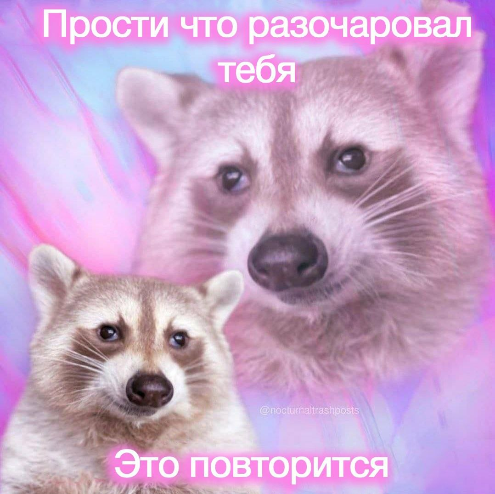
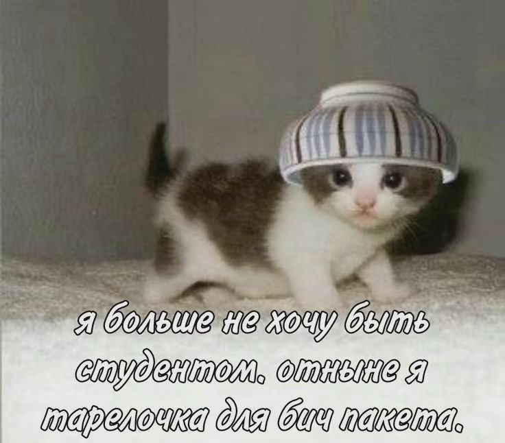
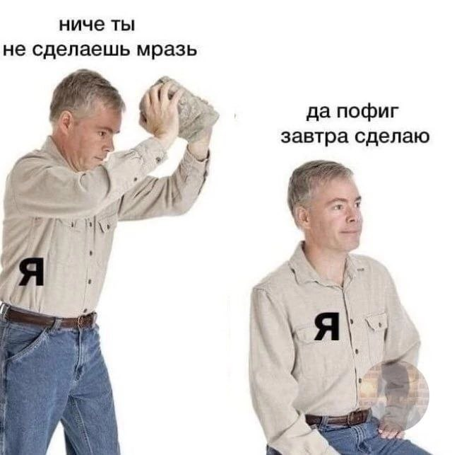

Таблица с рангом мемов
| Ранг | Мемы |
|---|---|
| S+ |
Высший ранг получают мемы с енотами, потому что они мне нравятся больше всех. Они все максимально абсурдные, жизненные и смешные. Убойное сочетание. Также на просторах интернета они встречаются не так часто, поэтому я занимаюсь их распространением, чтобы как можно больше людей узнало об их существовании.  |
| S |
Далее идут мемы с котами, потому что это классика и каждый найдет в этой категории что-то для себя, ведь коты нравятся всем.  |
| A |
Ранг A занимают абсурдные или не очень жизненные мемы, такие вещи очень хорошо дополняют переписки для описания всей сложившейся ситуации.  |
| B |
Далее идут мемы про учебу, в частности про программирование, но так как аудитория такого рода мемов маловата, то они почетно занимают B ранг |
| C |
Ранг C, который ну такой, нейтральный, занимают мемы про стипендию. (Я просто не придумала что еще сюда вставить и в архиве мемов на эту тему у меня всего 2, как и количество стипендий в жизни) |
| D |
Я люблю мемы, поэтому ни один из них не отнесу к плохим) |
| E |
Мем "Я люблю пересдачи". Наихудший мем в моей жизни, скорее всего проклятый. После его отправки в чат я попала на первую в жизни пересдачу по истории, которая была одновременно моим первым экзаменом... Картинки по очевидным причинам не будет, эта картинка была сразу удалена и больше никогда не вернется в мою галерею (считаю, нужно удалить ее из интернета). |